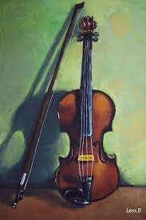
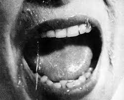
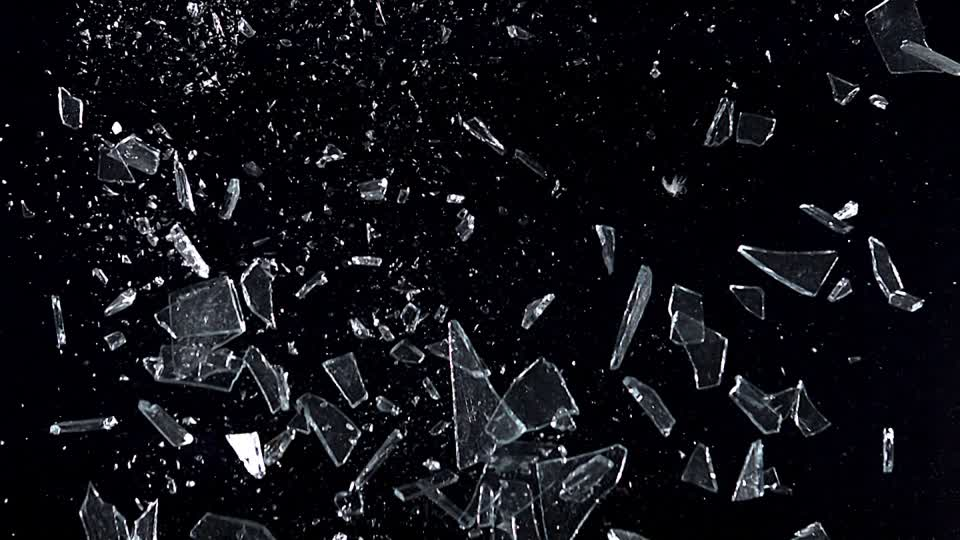
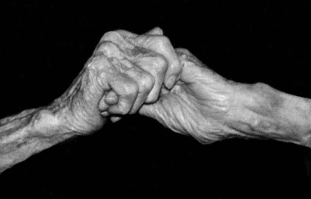
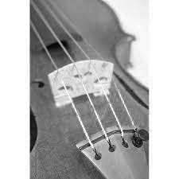

start
VIOLIN
mama has always been all mouth
all boiling barks, breaking chords, and twisting tongues
she stands, ready to break like hot glass,
and i try not to wait for the moment she does.
a perpetual motion of wringed joints pressed against Bach's insensitive fingerings,
hard lines of rosin,
and treble clefs
render her fearless in her assaults.
i try not to notice the sweat gathering in the crests of my fingerprints
and instead concentrate on balancing the slender violin neck between my fingertips.
The wood is warm,
soft,
familiar,
and I press the base of my violin further into my neck and tilt my chin
-- a cradle.
when the callouses of my fingertips touch the cool strings, my fingers comply
as if extensions of my forearms send signals of my own nervousness to sound waves.
the sound shivers.
before, the spring flesh below my nail was tender.
the coils of the string used to vibrate in angry rebellion against their immaturity
now, i can barely feel my fingertips when they touch the string.
when i pull the bow from the frog to a series of chords,
it becomes a competition with my mother.
my violin,
it brings out the worst in me.
it brings back memories of torn pages from The Hobbit,
flying music stands,
and the realization that I could not love the violin as much as Mama wanted me to.
i didn't quit because Mama's mouth was louder than my strings.
i did it because
i didn't have enough love for both.




